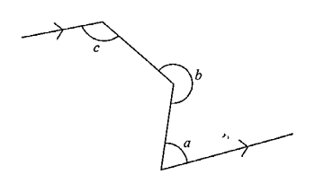

Topic 11 · Geometry | Angle relationships among a transversal, a ray & three deflection angles
According to the figure, which of the following must be true?

Draw line $ST$ parallel to line $PQ$. The broken path goes $P \to Q \to R \to S \to T$.
$a = \angle PQR$, $b = \text{reflex } \angle QRS$, $c = \angle RST$.
Move $Q$ only so that $PQ$ gets longer. Then $a$ decreases while $c$ stays the same.
So the L.H.S. of $a + c = 180^\circ$ changes, but the R.H.S. is fixed.
✗ Not always true (only true when the two rays $PQ$ & $ST$ are parallel)
Method 1 — auxiliary parallel line through $R$
Let $U$ be a point on the line through $R$ with $QU \parallel PQ \parallel ST$.
$\angle QRU = 180^\circ - \angle PQR = 180^\circ - a$ (int. $\angle$s, $UR \parallel PQ$)
$\angle SRU = \angle RST = c$ (alt. $\angle$s, $UR \parallel ST$)
$\text{reflex } \angle QRS = \angle QRU + \angle SRU$
$b = (180^\circ - a) + c$
$\Rightarrow \; a + b - c = 180^\circ$
✓ Must be true
Let $V$ be the point where $PQ$ extended meets a line through $R$ such that $VRS$ is a straight line.
$\angle QVS = 180^\circ - c$ (int. $\angle$s, $PQ \parallel ST$)
$\angle QRV = \text{reflex } \angle QRS - 180^\circ = b - 180^\circ$
In $\Delta VQR$ :
$\angle QVR + \angle VQR + \angle QRV = 180^\circ$ ($\angle$ sum of $\Delta$)
$(180^\circ - c) + a + (b - 180^\circ) = 180^\circ$
$\Rightarrow \; a + b - c = 180^\circ$ ✓ confirms statement II.
Again move $Q$ only so that $PQ$ gets longer. Then $b$ increases while $c$ stays the same.
The L.H.S. of $b + c = 360^\circ$ increases but the R.H.S. is unchanged.
✗ Not always true
Only statement II must be true.
Therefore the answer is B.
Question. In the figure, \(PQ\parallel ST\). The broken line goes \(P\to Q\to R\to S\to T\), where \(\angle PQR=70^{\circ}\) and \(\angle RST=25^{\circ}\). The reflex angle \(\angle QRS\) is A. \(95^{\circ}\) B. \(110^{\circ}\) C. \(135^{\circ}\) D. \(155^{\circ}\) [1 mark]